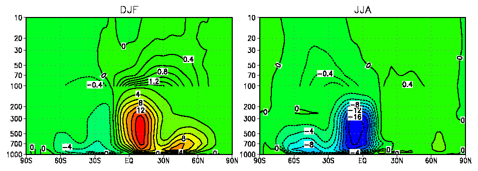
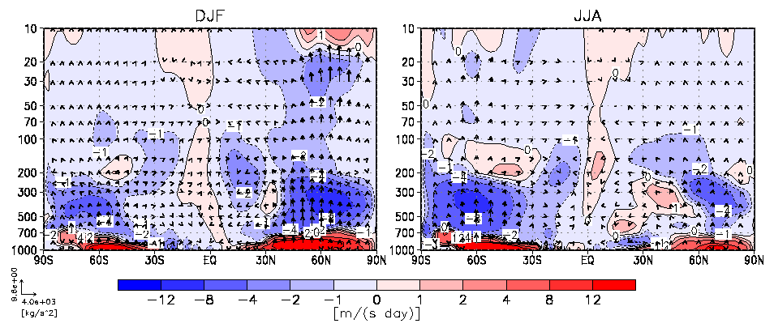
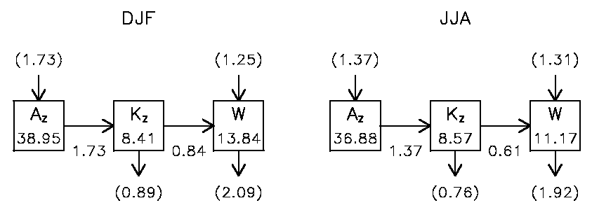
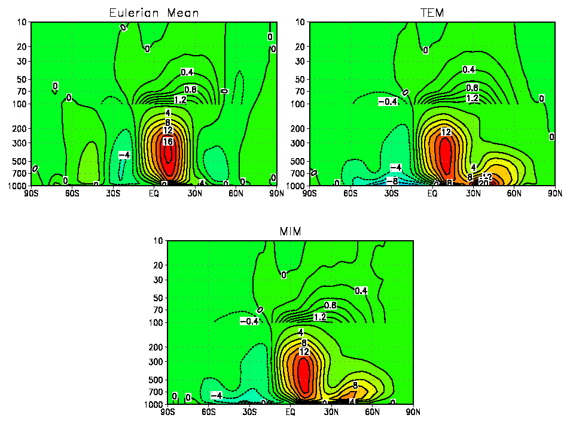

MIM
What is MIM?
Mass-weighted Isentropic zonal Means (MIM) facilitates to exactly express the finite-amplitude effects and lower boundary conditions for wave-mean flow interactions
MIM diagnostic scheme
This is the software package to analyze the atmospheric general circulation based on mass-weighted isentropic zonal means (MIM). The mean-meridional circulation, wave-mean flow interactions and energy conversion rates can be derived from conventional grid meteorological data, for example, reanalysis data.
Examples (NCEP/NCAR Reanalysis, DJF/JJA, 18years)
- DJF : (Dec1990,Feb1991)-(Dec2007,Feb2008)
- JJA : 1990-2007
Mean Meridional Circulation [1010kg/s]

EP Flux [kg/s2] and Divergence [m/(s day)]

Global Mean Energy [105J/m2] and Energy Conversion [W/m2]

Comparison with Eulerian Mean, TEM, and MIM Meridional Circulation [1010kg/s]
- TEM : Transformed Eulerian Mean (Residual Circulation)
